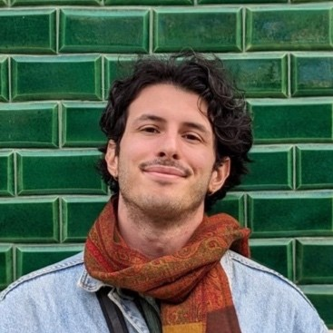

Hi!
I'm Luca, a computational neuroscientist pursuing a PhD at Charles University.
I study sensory processing in the visual cortex, aiming to uncover underlying computational principles and develop stimulation strategies for cortical prostheses that more effectively engage visual representations for vision restoration in blind individuals.
Investigating how biological neural networks represent information, I becamed interested in mechanistic interpretability of LLMs and, more broadly, in AI safety and alignment.
Peer-reviewed articles
Loading publications...
Curriculum Vitae
Education
PhD in Computational Neuroscience
Charles University, Prague | Supervisor: Ján Antolík
2020 - Present
MSc in Theoretical Physics
University of Milan - Bicocca | Graduated with honors
2017 - 2020
BSc in Physics
University of Milan - Bicocca | Graduated with honors
2014 - 2017
Research Experience
SPAR (Supervised Program for Alignment Research)
AI Safety Research | Supervisor: Stefan Heimersheim
February 2025 - May 2025
PhD Research Secondment
Femtonics, Budapest
September 2022 - October 2022
PhD Research Secondment
Neuronal Intelligence Lab, Göttingen / Supervisor: Fabian H. Sinz
March 2022 - June 2022
Internship
LIPh (Laboratory of Interdisciplinary Physics), Padua
October 2019 - April 2020
Email: loocabaroni@gmail.com
Location: Vienna, Austria
GitHub: GitHub Profile
LinkedIn: LinkedIn Profile
Research group: CSNG webpage